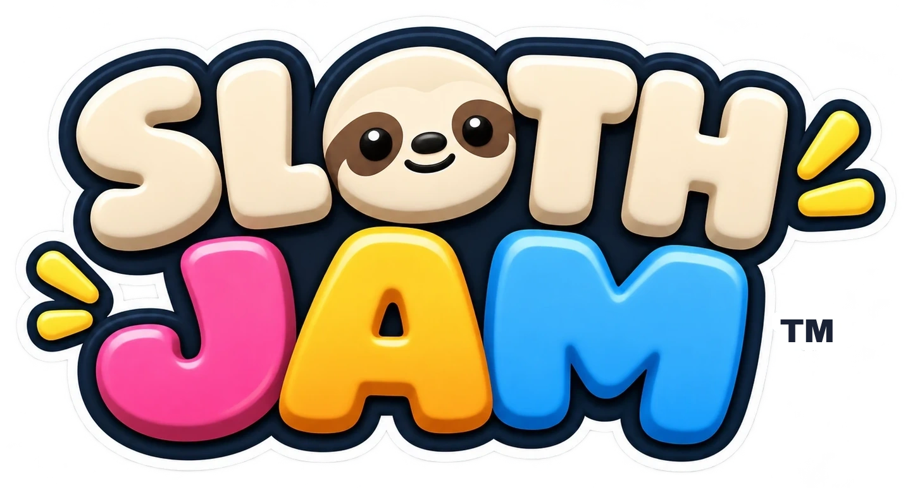

Sloth Jam is a free cozy party game for the whole family: 64 one-minute party games and growing on a sloth island, one stick and one button, no reading needed, ages 6 and up. It needs JavaScript to run. Learn more at slothjam.com.
